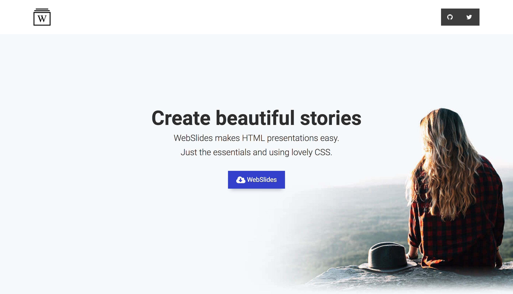
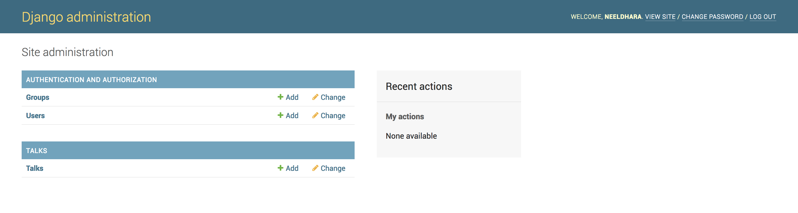
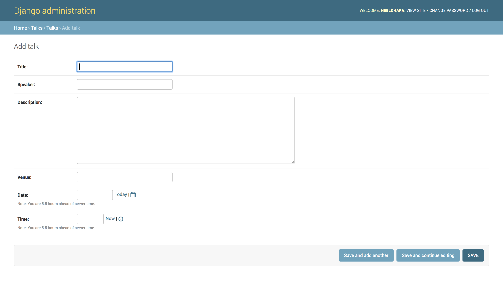
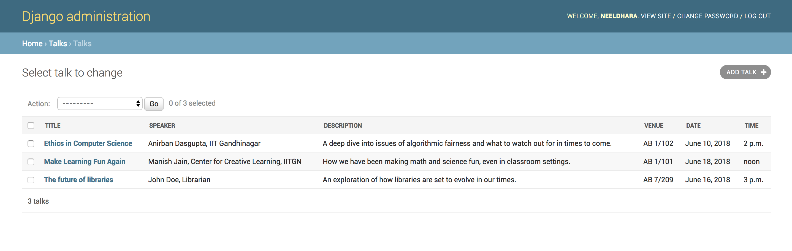
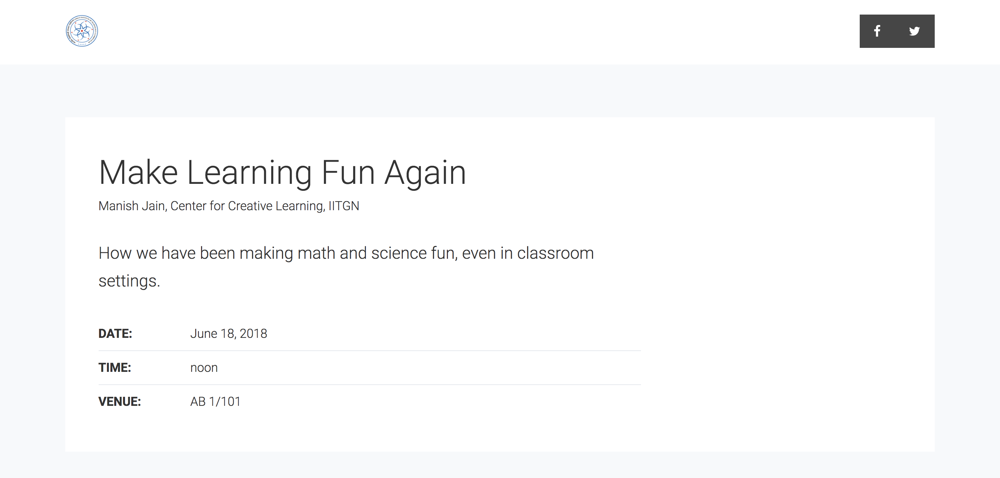

In preparing for a session in a Python workshop (organised for teachers of the CBSE board who are teaching students informatics and computer science in 11th/12th grades, and who have recently had their official syllabus switch from C++ to Python), I finally got around to exploring the process of building a webapp powered by Django. I picked up the excellent Hello Web App book by Tracy Osborn for my preparation. In this post, I am going to document the process — just in case I have to do this again ☕️
The tutorial in Hello Web App goes over the process of building a generic “collection of things” with Django. In this tutorial, I’ll focus on a more concrete example, because it was more fun for me to build a tangible concept that I might actually use later.
So, I am going to build a collection of talk announcements at IIT Gandhinagar, which I intend to be displayed, on the frontend, as a slideshow. I figure that this website can then be loaded up on any internet-connected display and serve as a virtual notice board. For the frontend design, I’m going to be stealing the Webslides framework, which is a really clean HTML/CSS template for making slideshows powered by Javascript.
Quickstart
I’m going to handwave the bit about installation. Briefly, I setup Django v2.0.4 in a virtual environment, put the codebase in a git repository, and initialized a Django project via:
django-admin startproject announceiitgn .
and then a Django app via:
django-admin startapp talks
It’s also important to add this app to settings.py, like so:
INSTALLED_APPS = [
'talks',
'django.contrib.admin',
'django.contrib.auth',
'django.contrib.contenttypes',
'django.contrib.sessions',
'django.contrib.messages',
'django.contrib.staticfiles',
]and also run a migration command to account for an initial setup for the databases (if you skip this step, Django will prompt you to do it anyway — as I found out by forgetting 😎):
python [manage.py](http://manage.py/) migrate
Finally, see your app by running the server! 🎉
python [manage.py](http://manage.py/) runserver
You should see a neat little success page if you navigate to something like http://127.0.0.1:8000/ (the exact URL should be in your console).
If you are not sure how to get to this point, I’d suggest looking up an installation/setup guide such as this one from the official documentation or this one from Django Girls.
Setting up Templates
The first step is to setup a basic HTML template that becomes the frontend. We go into our app directory (which, in my case, is talks) and then make a templates directory inside it, where I make a simple index.html file. Instead of using a skeleton file here, I’m going to take a deep breath and throw in the index.html from the webslides codebase. At this point I know it won’t be a pretty sight, but I’m also optimistic that I can iron it out as I go along 🤕
I’m going to head over to urls.py and add the following import:
from talks import views
and then add the following item to urlpatterns, which I understand only vaguely at this point:
path('',views.index,name='home'),
We now need to make sure that views.index actually makes sense, so switch to views.py in the talks directory and add the following:
def index(request):
return render(request,'index.html')Note that render has already been imported for you from django.shortcuts. For now, I sense that this is the plumbing connecting the directive in urls.py to the meat in the templates directory. Now, navigating again to the webapp, while it’s not exactly pretty (just as predicted), but at least you can see that all the connections are working as intended:

So it’s time to add the static supporting files for the webslides template. I’m going to create the folder static inside the talks folder. Inside the static folder, copy over the folders css, js and images from the webslides template bundle. Now, we need to make sure that our index.html loads these supporting files from the appropriate location. This is a critical step and will completely transform the way the website is rendered if done correctly. So what we are going to do is add the following line to the top of the file:
{% load staticfiles %}
Next, find all instances of anything that looks like:
<link rel="stylesheet" type='text/css' media='all' href="static/css/webslides.css">
and change it to:
<link rel="stylesheet" type='text/css' media='all' href="{% static 'css/webslides.css' %}">
Careful with getting the quotes and the template tags in place accurately! Also remember to attack every instance of a reference to anything the static/ directory. If you are comfortable with it, this is a near-one-shot find and replace with a regex search.`
You could also make this work by using relative paths (i.e., changing the paths to ../css/webslides.css), but using the Django template tags as above is more robust to changes in the directory structure — so in case your static files folder moves around, your code doesn’t have to change.
Now, for the moment of truth, restart the server:
python [manage.py](http://manage.py/) runserver
and revisit your site:

So there! We’ve managed to render the webslides deck inside of our Django project — which is an awesome start already: 🎉
Starting Clean
Of course, we don’t quite want the index.html file to hold this particular content. I’m going to quickly pick out a slide (from the webslides demonstrations) that looks nice for displaying talk announcements, and get rid of all the original sections and just use this one. Here’s the HTML for the sections that I ended up with, populated with some sample content:
<section>
<div class="wrap">
<div class="card-30 bg-white">
<div class="flex-content">
<h2>Talk Title 1
</h2>
<p>Speaker Name & Affiliation</p>
<p class="text-intro">A brief abstract of the talk.
</p>
<ul class="description">
<li><strong class="text-label">Date:</strong> 16 June 2018</li>
<li>
<strong class="text-label">Time:</strong> 10:00 AM
</li>
<li><strong class="text-label">Venue:</strong> Academic Block 1, Room 101</li>
</ul>
</div>
<!-- end .flex-content-->
</div>
<!-- .end .card-50 -->
</div>
<!-- .end .wrap -->
</section>Of course, this data would eventually be passed into the template from the database, but let’s render our site anyway and check it out once more before moving on:

It’s not hard to customize the header from index.html, but I am postponing that for a little bit later.
Template Inheritance
It’s useful to have global-ish aspects of our template separated out into a (presumably traditionally named) base.html template, so we can make spin-offs easily. For example, when we have interviews we like to display room numbers for candidates interviewing for different disciplines on the same day, and some related general information. This page will carry the same overall structure, but we might want to use a slightly different combination of section templates. So let’s rip out the generic stuff from index.html and move it to base.html:
{% load staticfiles %}
...bunch of webslides header stuff...
<main role="main">
<article id="webslides" class="vertical">
{% block content %}
{% endblock content %}
</article>
<!-- end article -->
</main>
<!-- end main -->
...bunch of webslides footer stuff...(Please don’t copy-paste this, work with your own webslides template if you are literally following along! I’ve not dislpayed a bunch of stuff from their index.html in the interest of space.)
Meanwhile, your index.html now looks like this:
{% extends 'base.html' %}
{% load staticfiles %}
{% block content %}
<section>
<div class="wrap">
<div class="card-30 bg-white">
<div class="flex-content">
<h2>Talk Title 1
</h2>
<p>Speaker Name & Affiliation</p>
<p class="text-intro">A brief abstract of the talk.
</p>
<ul class="description">
<li><strong class="text-label">Date:</strong> 16 June 2018</li>
<li>
<strong class="text-label">Time:</strong> 10:00 AM
</li>
<li><strong class="text-label">Venue:</strong> Academic Block 1, Room 101</li>
</ul>
</div>
<!-- end .flex-content-->
</div>
<!-- .end .card-50 -->
</div>
<!-- .end .wrap -->
</section>
{% endblock content %}Remember to make sure that the line:
{% extends 'base.html' %}
is the very first thing in your file, and that you add:
{% load staticfiles %}
in case you plan to use anything in your static directory in index.html. The power of inheritance becomes a little more evident when you have other files piggybacking on base.html, but I’ll leave that to your imagination for now.
Setting up the Database
We’re going to start by creating an admin user, by typing the following into the commandline:
python manage.py createsuperuser
This prompts for a username, email and password — nothing out of the ordinary here. Next up is a critical point in this whole exercise, which is to setup the model, or the database schema, for the items we wanted to display. From the HTML above you might have guessed that what I want to define at this point is a talk object with the following attributes:
- Talk Title
- Speaker Name
- Venue
- Date
- Time
To capture this, add the code below to models.py:
class Talk(models.Model):
title = models.CharField(max_length=255)
speaker = models.CharField(max_length=255)
description = models.TextField()
venue = models.CharField(max_length=255)
date = models.DateField()
time = models.TimeField()The field types should be self-explanatory. One type that I did not use was the SlugField, which can be handy if you want every talk to have its own page. For now, we’re keeping it simple. We then ask Django to pick up this updated database plan by running migrations as follows:
python manage.py makemigrations python manage.py migrate
We next get the built-in Django admin interface up to speed with information about our new database, by adding the following lines to admin.py in the Talks folder:
from talks.models import Talk
class TalkAdmin(admin.modelAdmin):
model = Thing
list_display = ('title','speaker','description','venue','date','time')
admin.site.register(Talk, TalkAdmin)The business with the TalkAdmin class is optional, but it lets you do nice things like prepopulate fields where relevant: for instance, if we had a slug field, we could have said something like:
prepopulated_fields = {'slug'}: ('name',)}
just after the list_display line above, and you could see the slug getting automatically generated in the admin interface. Speaking of admin interfaces, let’s check ours out — head over to http://127.0.0.1:8000/admin/ and login with your superuser credentials. Here’s what I see:

You should find your own data in the users table. But the interesting bits are in the Talks table, which is going to look exactly the way we modeled it above when you go to the table and click on the Add Talk button:

Now let’s go ahead and add some sample data in here:

I added this from the admin interface. If you like, you can setup forms for other users to add data to the database, but that’s going to be beyond the scope of our first app. For now, let’s get to tying this all together by getting the data from here to display on the frontend…
Displaying Dynamic Content
If you’ve come this far, you are now ready to pull your data into the slideshow that we setup from before. First, let’s get into views.py, pull the data from our database, and pass it on to our template. Modify the file so it looks like this:
from django.shortcuts import render
from talks.models import Talk
#Create your views here.
def index(request):
talks = Talk.objects.all()
return render(request, 'index.html', {
'talks': talks,
})Next, let’s head back to our index.html file, and adapt our content block:
{% extends 'base.html' %}
{% load staticfiles %}
{% block content %}
{% for talk in talks %}
<section>
<div class="wrap">
<div class="card-30 bg-white">
<div class="flex-content">
<h2>{{ talk.title }}
</h2>
<p>{{ talk.speaker }}</p>
<p class="text-intro">{{ talk.description }}
</p>
<ul class="description">
<li><strong class="text-label">Date:</strong> {{ talk.date }}</li>
<li>
<strong class="text-label">Time:</strong> {{ talk.time }}
</li>
<li><strong class="text-label">Venue:</strong> {{ talk.venue }}</li>
</ul>
</div>
<!-- end .flex-content-->
</div>
<!-- .end .card-50 -->
</div>
<!-- .end .wrap -->
</section>
{% endfor %}
{% endblock content %}Note that we’re now using a for loop to go over everything in talks, and replacing our static content with template tags that represent the corresponding data from the database. Django has a lot of interesting ways in which you can format your content (such as dates and times, especially, but even text strings — for instance, they can always be rendered in title case, if you like, and so on). Since the default view here is not bad, I won’t be pursuing this further — but it’s good to know that you can do cool things.
Let’s check out our site now, to relish the sight of the slides populated with conent from our database:

Filtering Dynamic Content
Let’s say we only want to display those talks whose date is not in the past — this is a natural ask, we don’t want our virtual notice board to be cluttered with information about talks from the past (that’s more suitable for a talk archive page), and we also don’t want to have to delete talks from the database manually (two issues with this: the first is that manual is tedious, the second is that it’s nice to keep the data — quite likely the developer of the future archive page will find it useful).
One way to do this is to loop through all the talks in our template file, and setup a conditional for whether we display it. The main problem doing it this way is that we are doing waaaay more work than is called for: eventually this database will have thousands of talks, while you probably need to get hold of a dozen or so of them. The more appropriate solution is to setup what is called a filter when you make the database query. After some fiddling around, I finally got to this updated query in my views file:
talks = Talk.objects.filter(date__gte=datetime.now()).order_by('date')
Remember to import datetime for the above to work:
from datetime import datetime
The syntax here is almost self-explanatory: we got rid of the .all() and replaced it with a .filter() to indicate that, indeed, we don’t want all records but only those that match the filter criteria. Next, gte stands for greater than or equal to; datetime.now() refers to today’s date; while the order_by directive asks the retrieved objects to be ordered according to a particular field. You can order by this-then-that by simply adding multiple fields separated by commas, and you can reverse the order by adding a leading hyphen (or a “minus”, if you like) to the field name. Try all this out! Also: try to mess around with the query to see what happens when the query returns an empty set of records.
Going back to our app, we see that the one talk that was in the past (at the time of this writing) is now gone:

Finishing Touches
One thing I didn’t touch upon was how to pass Python variables into the template. Let’s try this now, by adding a final slide that displays today’s date and a nice background image (which resides in the images/ folder under the static directory). To pull out today’s date, let’s set a variable currdate in our views file, and pass it on to our template, like so:
def index(request):
talks = Talk.objects.filter(date__gte=datetime.now()).order_by('date')
currdate = datetime.now()
return render(request, 'index.html', {
'talks': talks,
'currdate': currdate,
})Back to the template, as before, I picked up a nice-looking section from the vast array of webslide’s demo pages. Carefully add this section after the forloop block ends:
<section class="bg-gradient-v slide-bottom">
<span class="background light" style="background-image:url('{% static 'images/campus-bg.png' %}')"></span>
<div class="wrap">
<div class="content-right">
<h3 class="alignright">{{ currdate|date }}</h3>
</div>
</div>
<!-- .end .wrap -->
</section>Note the use of { currdate|date } — this displays the value of the variable currdate but formatted so that only the date is displayed (without the trailing date instruction, this would display the date and the time by default). This gives us a cool final slide:

Also remember to head back to base.html and customize the header so the social media links and the logos are relevant to your setting:

Beyond the First App
Our app was, by design, a largely view-only app. In most situations, however, your app will likely have users, so you would want features like:
- Registration (possibly even single-sign ons)
- A Login Flow (optionally, also an onboarding flow)
- Reset Password
- The ability for users to view user-specific data
- The ability for users to add/edit/delete user-specific data
For a lot of this you would need to invoke some kind of a customized form interface (different from Django’s built-in admin interface) that allows the user to interact with the database. Covering this is beyond the scope of our discussion, but if you would like to set these things up, I’d suggest continuing your journey with either this Django tutorial series, the official documentation, or Hello Web App. Have fun!